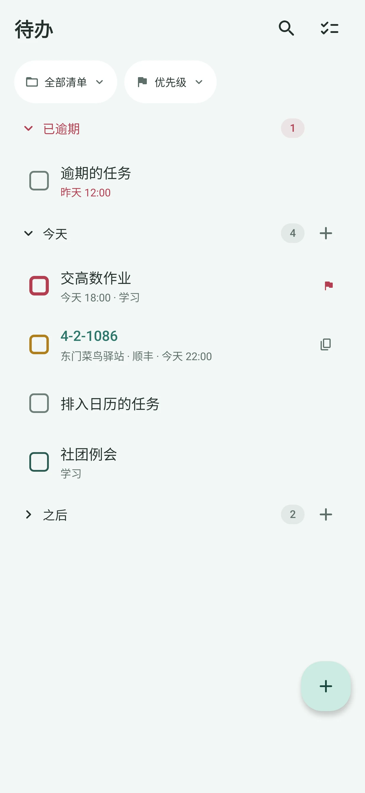
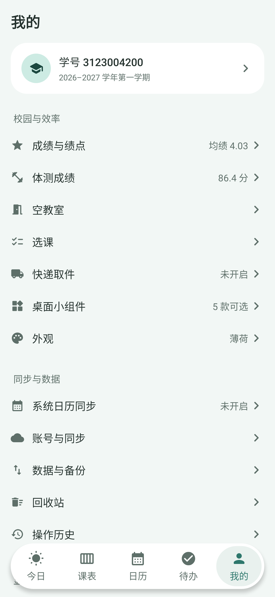
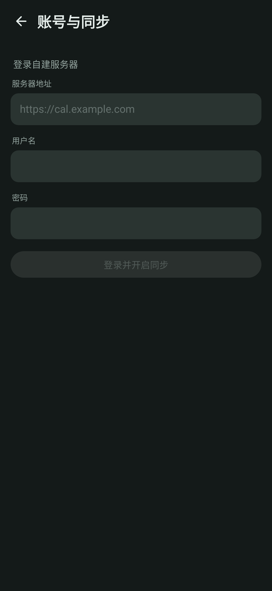
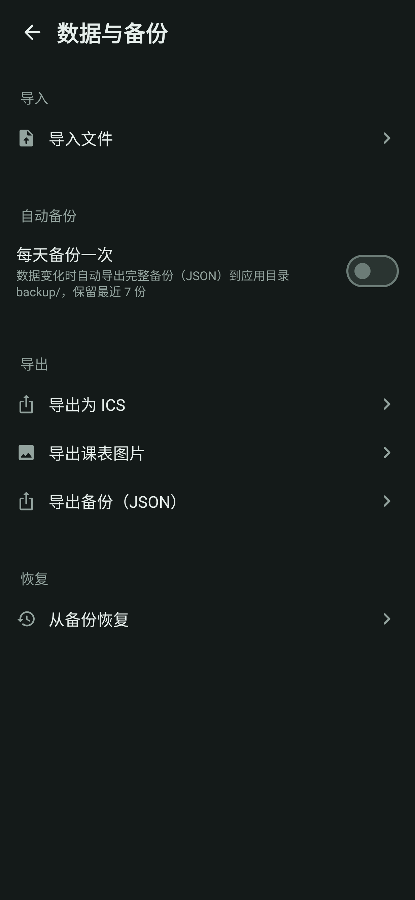

空教室周课表
按楼栋节次筛空位，叠加课表按格框选。




点按卡片预览。
叠加个人课表，在右侧 周四 6–7 节 按住下拉框选。

教务、日常与系统能力。
按楼栋节次筛空位，叠加课表按格框选。
查看选课窗口与学分钱包，实时标记时间冲突并快捷选退课。
按学期与类别筛选，点选单科重算 GPA。
小组件直显考场座位（如 教1-203 · 18座），考试高优提醒并自动完全静音。
统一认证导入课表与每周增量更新，同步查询体测明细。
6 套配色与深色模式，支持壁纸取色。
自然语言建待办与图片网格拖拽排版，自动提取短信取件码。
普通课程仅震动、考试完全静音，支持系统日历双向同步与 .ics。
数据默认存本机，可按需部署 Go + SQLite 服务端，大屏浏览器直连与整库备份。


单二进制 Go + SQLite 服务端，多端自动增量同步课表与待办。
服务端内置零构建网页端，电脑大屏直连排课；手机局域网直连即将回归。
支持每日自动 JSON 备份、导出课表图片与 .ics，并兼容服务端 MCP。
点按图片放大。